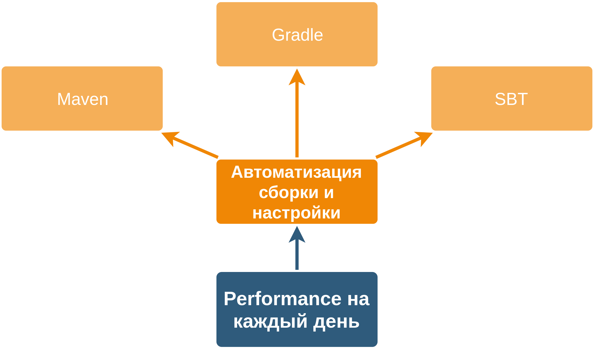
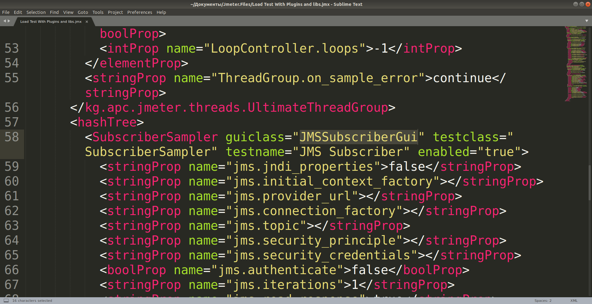
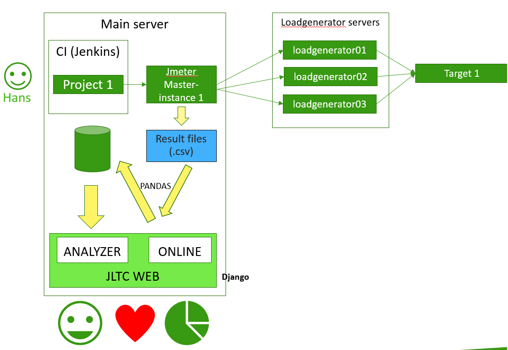
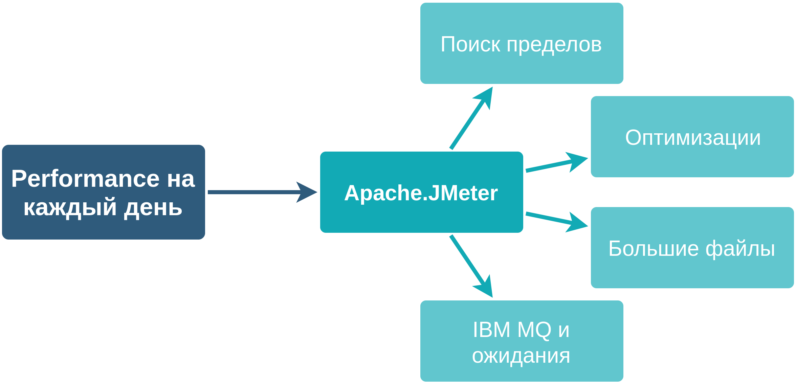
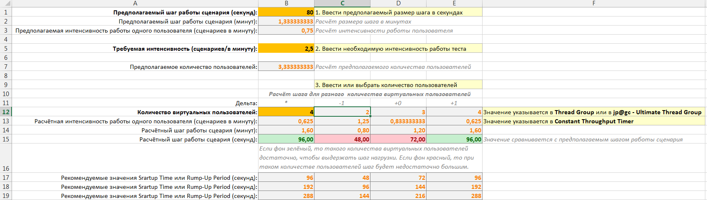
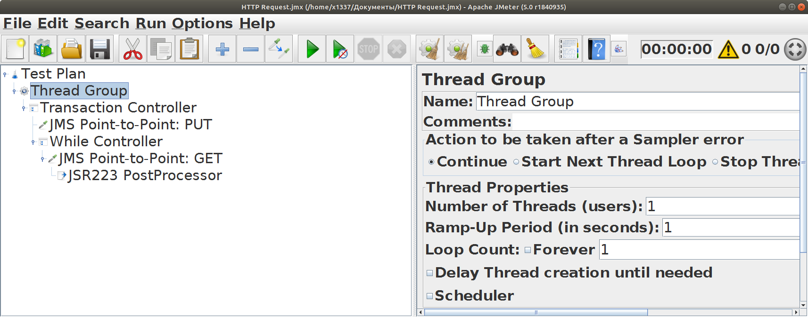
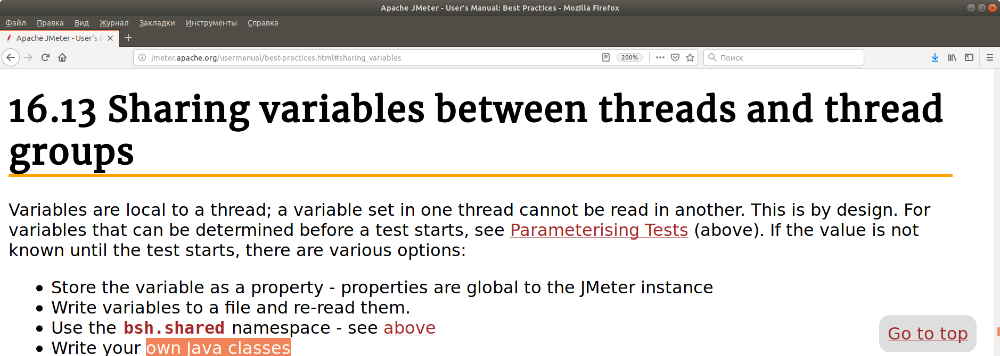
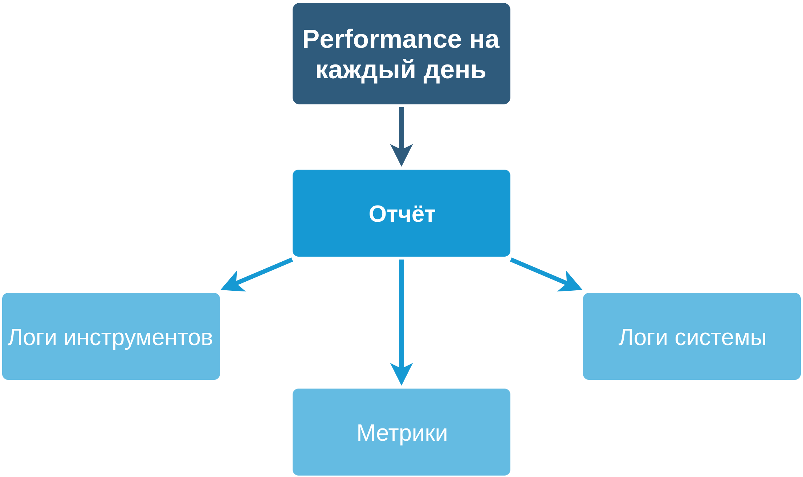
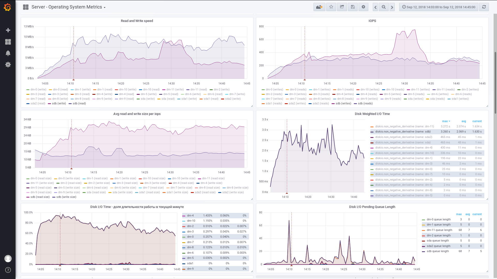
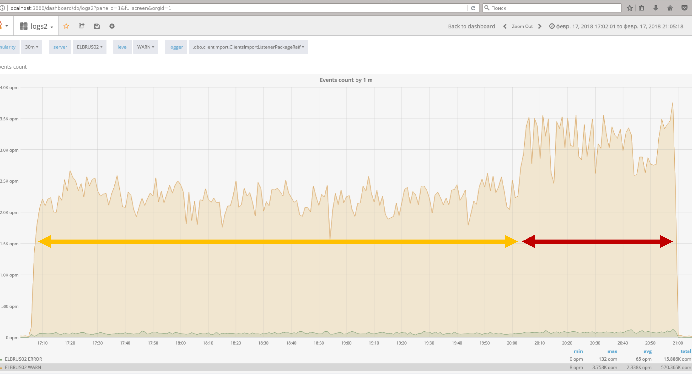

От Apache.JMeter к Gatling Performance на каждый день Смирнов Вячеслав Эксперт по тестированию Райффайзен банк Цель CI/CD для тестирования производительности: подавать высокую нагрузку автоматизировать выполнение теста уложиться в возможности сборочного агента Continuous deployment Continuous deployment Планируемый процесс Performance на каждый день Автоматизация сборки и настройки  Автоматизация сборки и настройки Что делал Скрипты JMeter (без библиотек и плагинов) Скрипты JMeter + каталог с зависимостями Скрипты JMeter + jmeter-maven-plugin (Автоматизация) сборки и настройки Скрипты JMeter (без библиотек и плагинов)  (Автоматизация) сборки и настройки Скрипты JMeter (без библиотек и плагинов) Автоматизация сборки и настройки Скрипт JMeter + каталог с зависимостями Автоматизация сборки и настройки Скрипт JMeter + каталог с зависимостями Автоматизация сборки и настройки Скрипт JMeter + каталог с зависимостями ../libs/ com.ibm.mq.jar (user.classpath) ../plugins/ jpgc-casutg-2.6/lib/ext/ (search.paths) jmeter-plugins-casutg-2.6.jar jpgc-casutg-2.6/lib/ (plugin_dependency_paths) jmeter-plugins-cmn-jmeter-0.4.jar Автоматизация сборки и настройки Скрипт JMeter + каталог с зависимостями # Плагины search.paths=../plugins/jpgc-casutg-2.6/lib/ext # Зависимости плагинов plugin_dependency_paths=../plugins/jpgc-casutg-2.6/lib # Библиотеки для Groovy-скриптов (JSR-223), для невизуальных компонентов user.classpath=../libs/com.ibm.mq-9.0.2.987123.jar;../libs/com.ibm.mqjms-9.0.2.987123.jar Property-файл передаётся в JMeter при запуске скрипта -G[propertyfile] defines a file containing JMeter properties to be sent to all remote servers. -p, --propfile <argument> the jmeter property file to uses Автоматизация сборки и настройки Скрипт JMeter + jmeter-maven-plugin +---+ <project> [...] <build> <plugins> <plugin> <groupId>com.lazerycode.jmeter</groupId> <artifactId>jmeter-maven-plugin</artifactId> <version>USE LAST VERSION</version> <executions> <execution> <id>jmeter-tests</id> <goals> <goal>jmeter</goal> </goals> </execution> </executions> <configuration> <jmeterExtensions> <artifact>kg.apc:jmeter-plugins-casutg:2.4</artifact> </jmeterExtensions> <!-- The plugin uses some broken dependencies. An alternative is to set this to true and use excludedArtifacts, see below --> <downloadExtensionDependencies>false</downloadExtensionDependencies> </configuration> </plugin> </plugins> </build> [...] </project> +---+ Автоматизация сборки и настройки Скрипт JMeter + jmeter-maven-plugin Автоматизация сборки и настройки Что видел Скрипты JMeter + единый дистрибутив Docker-контейнеры с Apache.JMeter Автоматизация сборки и настройки Скрипты JMeter + единый дистрибутив  Автоматизация сборки и настройки Выбрал maven jar-файлы в maven.org или artifactory; точность версий jar-файлов; в git только код и скрипты; точность настройки теста; простота запуска теста; знание maven (xml). Инструменты подачи нагрузки Инструменты подачи нагрузки В России через Google ищут JMeter в 10 раз чаще, чем Gatling Инструменты подачи нагрузки  Инструменты подачи нагрузки Поиск пределов $ ./run.sh ./script.01.Thread_Group.jmx --nongui Creating summariser <summary> Created the tree successfully using ./script.01.Thread_Group.jmx Starting the test @ Mon Oct 01 17:21:27 MSK 2018 (1538403687382) Waiting for possible Shutdown/StopTestNow/Heapdump message on port 4445 summary + 19 in 00:00:02 = 7.7/s Avg: 0 Min: 0 Max: 2 Err: 0 (0.00%) Active: 1 Started: 10 Finished: 9 summary + 256 in 00:00:30 = 8.6/s Avg: 0 Min: 0 Max: 12 Err: 0 (0.00%) Active: 2 Started: 139 Finished: 137 summary = 275 in 00:00:32 = 8.5/s Avg: 0 Min: 0 Max: 12 Err: 0 (0.00%) summary + 498 in 00:00:30 = 16.6/s Avg: 0 Min: 0 Max: 2 Err: 0 (0.00%) Active: 3 Started: 389 Finished: 386 summary = 773 in 00:01:02 = 12.4/s Avg: 0 Min: 0 Max: 12 Err: 0 (0.00%) summary + 738 in 00:00:30 = 24.6/s Avg: 0 Min: 0 Max: 19 Err: 0 (0.00%) Active: 2 Started: 757 Finished: 755 summary = 1511 in 00:01:32 = 16.4/s Avg: 0 Min: 0 Max: 19 Err: 0 (0.00%) summary + 976 in 00:00:30 = 32.6/s Avg: 0 Min: 0 Max: 17 Err: 0 (0.00%) Active: 2 Started: 1245 Finished: 1243 summary = 2487 in 00:02:02 = 20.3/s Avg: 0 Min: 0 Max: 19 Err: 0 (0.00%) summary + 1214 in 00:00:30 = 40.4/s Avg: 0 Min: 0 Max: 1 Err: 0 (0.00%) Active: 4 Started: 1854 Finished: 1850 summary = 3701 in 00:02:32 = 24.3/s Avg: 0 Min: 0 Max: 19 Err: 0 (0.00%) summary + 1454 in 00:00:30 = 48.5/s Avg: 0 Min: 0 Max: 2 Err: 0 (0.00%) Active: 3 Started: 2580 Finished: 2577 summary = 5155 in 00:03:02 = 28.3/s Avg: 0 Min: 0 Max: 19 Err: 0 (0.00%) summary + 1684 in 00:00:30 = 56.1/s Avg: 0 Min: 0 Max: 2 Err: 0 (0.00%) Active: 8 Started: 3427 Finished: 3419 summary = 6839 in 00:03:32 = 32.2/s Avg: 0 Min: 0 Max: 19 Err: 0 (0.00%) summary + 488 in 00:00:30 = 16.1/s Avg: 2 Min: 0 Max: 361 Err: 0 (0.00%) Active: 155 Started: 3818 Finished: 3663 summary = 7327 in 00:04:03 = 30.2/s Avg: 0 Min: 0 Max: 361 Err: 0 (0.00%) java.lang.OutOfMemoryError: Java heap space Dumping heap to java_pid21386.hprof ... Heap dump file created [2723488978 bytes in 41,828 secs] Killed Инструменты подачи нагрузки Поиск пределов Мониторинг java-процесса: оперативная память memory_rss, memory_swap и memory_stack процессор cpu_usage количество потоков num_threads telegraf: inputs.procstat: pattern: "java.+/ApacheJMeter" Инструменты подачи нагрузки Оптимизации [-] Debug Sampler [-] Thread Group, Generate Parent Sampler [-] XPath Extractor [-] XML-лог [+] nonGuiMode [+] Regular Expression Extractor создавать минимальное количество потоков Инструменты подачи нагрузки Оптимизации Инструменты подачи нагрузки Оптимизации  Инструменты подачи нагрузки Оптимизации Инструменты подачи нагрузки Большие файлы Инструменты подачи нагрузки Большие файлы Инструменты подачи нагрузки IBM MQ и ожидания  Инструменты подачи нагрузки IBM MQ и ожидания: SharedHashMap Инструменты подачи нагрузки IBM MQ и ожидания: SharedHashMap  Инструменты подачи нагрузки Gatling Архитектура: Scala Akka Netty Инструменты подачи нагрузки Gatling Инструкции: https://gatling.io/documentation/ https://habr.com/company/tinkoff/blog/344818/ * https://gatling.io/docs/current/extensions/maven_archetype/ Инструменты подачи нагрузки Gatling: Сдвиг влево Отчётность  Отчётность Логи инструментов Отчётность Логи инструментов Отчётность Метрики  Отчётность Метрики Отчётность create.configs.bat :: Bat file to create Telegraf configs for several hosts. :: To create config files you should specify host name and list of telegraf template files separated by space for each host. :: Config files (telegraf.conf) will be created in the 'config/<host-name>' dir. @pushd "%~dp0" @echo off chcp 65001 :: clean old configs rmdir /S /Q configs mkdir configs :: testWebStand.raiffeisen.ru (web,haproxy) call:create_config testWebStand.raiffeisen.ru ^ telegraf.header.conf telegraf.input.linux.conf telegraf.input.haproxy.conf pause goto:eof Отчётность create.configs.bat ::-------------------------------------------------------------------------------------------------------------------- :: Creates a Telegraf config for specified host from specified templates ::-------------------------------------------------------------------------------------------------------------------- :create_config SETLOCAL set HOSTNAME=%~1 set CONFIG_FILE=configs\%HOSTNAME%\telegraf.conf echo. echo %HOSTNAME%: Telegraf config will be created in "%CONFIG_FILE%" md configs\%HOSTNAME% && copy NUL %CONFIG_FILE% > NUL for /f "tokens=1,* delims= " %%a in ("%*") do set ALL_ARGS_BUT_FIRST=%%b for %%a in (%ALL_ARGS_BUT_FIRST%) do ( echo. %%a type %%a >> %CONFIG_FILE% ) ENDLOCAL goto:eof ::create_config @popd pause Отчётность Логи системы  Performance на каждый день Спасибо Смирнов Вячеслав Эксперт по тестированию Райффайзен банк